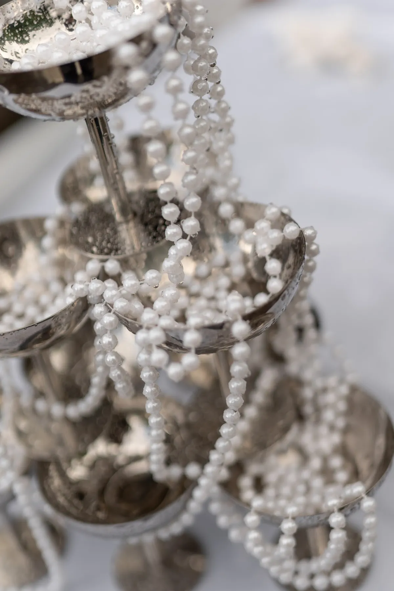
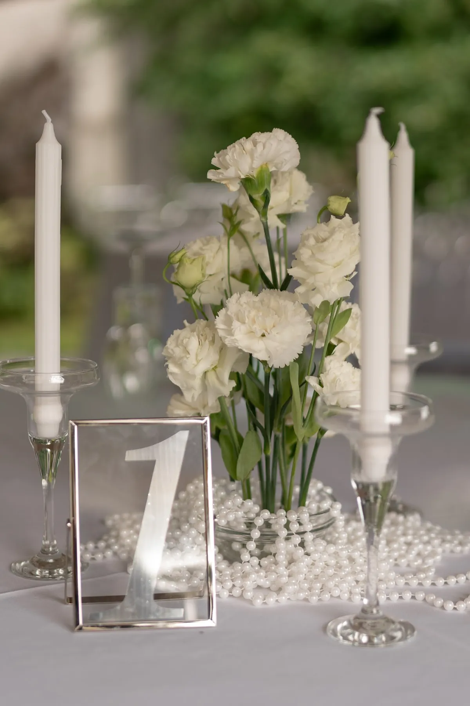

Шёлк и жемчуг — сочетание, которое выглядит спокойно и дорого. Ткань даёт мягкость и форму, жемчуг — блик и деталь. Рассказываем, как использовать их в оформлении церемонии, зала и столов, на примерах двух наших свадеб.
Шёлк: форма и мягкость
Струящаяся ткань делает пространство лёгким и торжественным. Из неё собирают арку, фон президиума, тканевый проход, драпируют стол пары. В свадьбе «Шёлк, пионы и свечи» шёлковая арка и ткань на полу создают основу церемонии, а у президиума драпировку поддерживают облака белых цветов и свечи.
Ткань чувствительна к ветру, поэтому на улице её фиксируют и продумывают крепления. Подробнее о материалах — в статье про текстиль и драпировку.


Жемчуг: блик и деталь
Нити крупного жемчуга оживляют ткань: они ловят свет, добавляют блеск и фактуру. В свадьбе «Шёлк и жемчуг в саду» нити свисают на арке из кремовой драпировки, обвивают серебряные подсвечники, а на столах повторяются рядом с белыми цветами и свечами. Из-за этого повтора вся свадьба собрана вокруг одной идеи.
Жемчужные нити тяжелее, чем кажутся: их крепят так, чтобы не провисали и не путались на ветру.


Как сочетать с цветами и цветом
Шёлк и жемчуг — нейтральная основа, поэтому лучше всего дружат со светлыми цветами: белыми, кремовыми, пудровыми. Серебро и стекло поддерживают блеск, а зелень добавляет жизни. О белой палитре — в статье про свадьбу в белом цвете. Вечером жемчуг и серебро ещё лучше смотрятся рядом со свечами — подробнее в статье про свечи на свадьбу.
Совет: не перегружайте. Если арка уже покрыта нитями жемчуга и тканью, на столах достаточно нескольких повторов — один-два предмета на стол.
Как заказать
Расскажите о площадке и палитре — предложим, где использовать ткань и жемчуг, и посчитаем смету.
Частые вопросы
Подходит ли жемчуг для современной свадьбы?
Да: крупный жемчуг в нитях выглядит графично и сегодня, а не старомодно, особенно в сочетании с простой драпировкой.
Чем заменить жемчуг, если он не нравится?
Подойдёт стекло, хрусталь, серебряные подвески или бусины других цветов. Идея та же: блик и фактура.
Подходит ли шёлк для выездной церемонии?
Да, но нужны надёжные крепления и план на случай ветра.